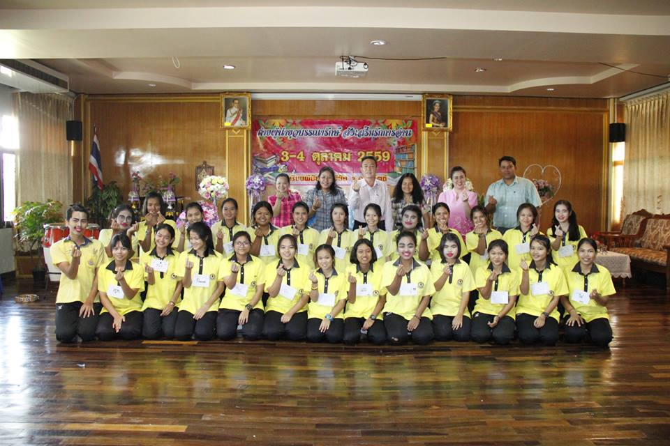
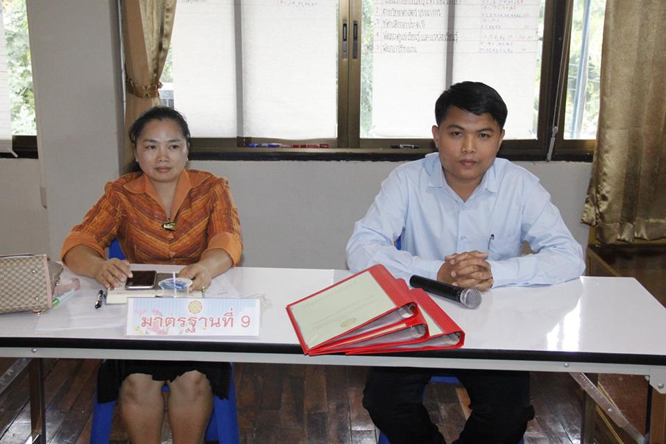
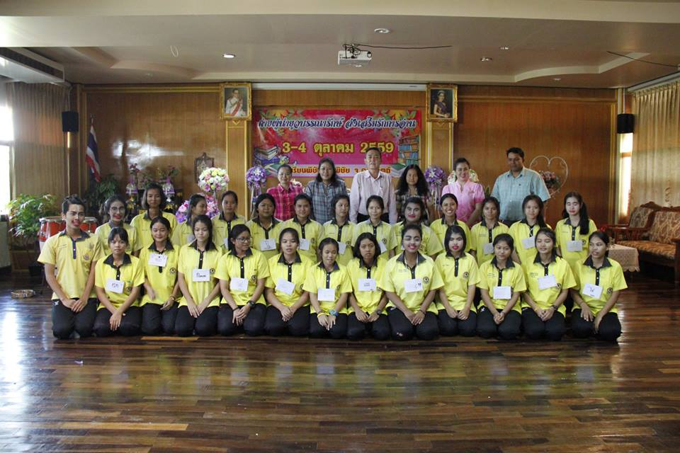

นางสาวจินตนา
อินดา
ครู วิทยฐานะ ครูชำนาญการพิเศษ กลุ่มสาระการเรียนรู้ภาษาต่างประเทศ มุ่งมั่นสร้างนวัตกรรมการเรียนรู้ที่ตอบโจทย์ศตวรรษที่ 21 เพื่อศักยภาพสูงสุดของผู้เรียน
.png)
ประวัติและความเชี่ยวชาญ
ปฏิบัติหน้าที่สอนรายวิชาภาษาอังกฤษ โดยเน้นการจัดการเรียนรู้แบบ Active Learning และกระบวนการคิดเชิงวิเคราะห์ เพื่อส่งเสริมทักษะการสื่อสารระดับสูงของผู้เรียน
วิทยากรดีเด่น
ด้านการจัดการเรียนรู้วิชาภาษาอังกฤษ และสื่อการสอนที่ทันสมัย
ผู้นำทางวิชาการ
หัวหน้าโครงการพัฒนาศักยภาพผู้เรียนสู่ความเป็นเลิศทางภาษา



ประเด็นท้าทาย (PA Highlights)
การมุ่งเน้นผลสัมฤทธิ์ของผู้เรียนผ่านกระบวนการจัดการเรียนรู้ที่ทันสมัยและตรวจสอบได้
การพัฒนาทักษะการสื่อสารภาษาอังกฤษ
ผ่านสื่อการเรียนรู้แบบ Interactive
ยกระดับผลสัมฤทธิ์ทางการเรียนเพิ่มขึ้นด้วยการใช้กิจกรรมที่เน้นการปฏิบัติจริงในห้องเรียน
ระดับความพึงพอใจของผู้เรียน
การพัฒนาสื่อการสอน
จัดทำชุดการสอนดิจิทัลสำหรับการพัฒนาทักษะการอ่านและการเขียนภาษาอังกฤษ
สำรวจผลงานการจัดการเรียนรู้

Activities
รวบรวมกิจกรรมการจัดการเรียนรู้ การออกแบบแผนการสอน และบรรยากาศในชั้นเรียนที่ส่งเสริมทักษะผู้เรียน
สำรวจกิจกรรม open_in_new
Certificates
เกียรติบัตรแสดงวิทยฐานะ การฝึกอบรมพัฒนาวิชาชีพ และรางวัลความภูมิใจในระดับต่างๆ
ดูเกียรติบัตร open_in_new
Gallery
คลังภาพและวิดีโอหลักฐานการปฏิบัติงาน ผลงานนักเรียน และภาพกิจกรรมส่งเสริมวิชาการ
เปิดแกลเลอรี open_in_new